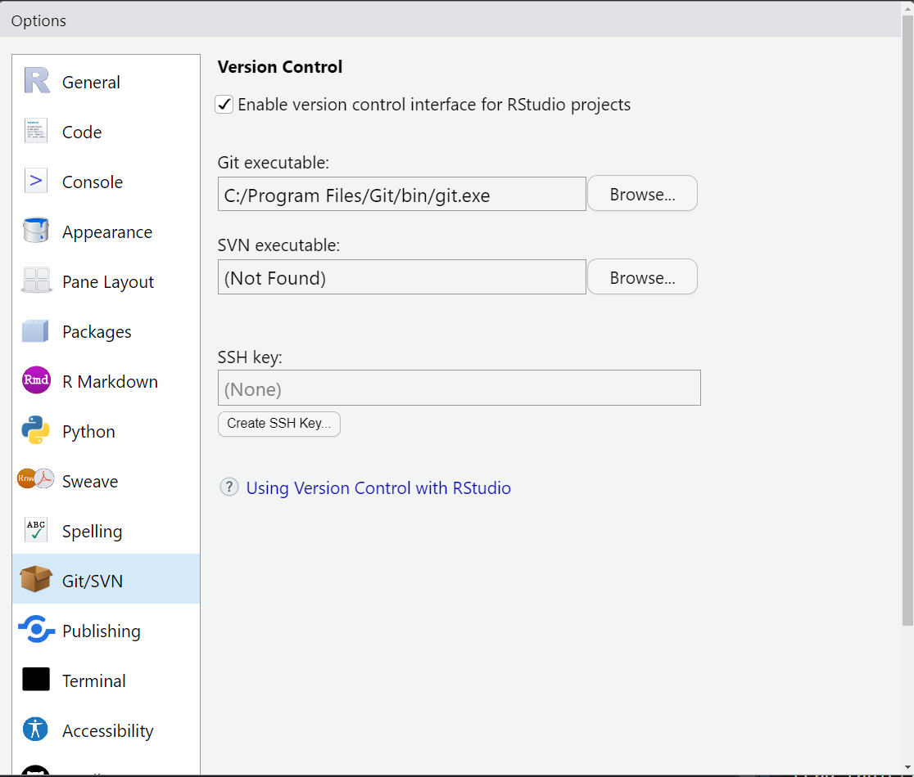

renv::init()Setup a project folder
Abstract
This part gives a brief introduction in how to setup a project folder for any data-related projects.
Warning
This page under active development.
Structure of project folder
The structure of a project folder should look anything like in the following example. Different components of a project (i.e., data, code, and output-files) should be stored in different directories.
ProjectName/
├── data/
│ ├── raw/
│ │ ├── rawData-1.csv
│ │ ├── rawData-2.csv
│ │ └── ...
│ ├── processed/
│ │ ├── 01_dataCleaning.csv
│ │ ├── 02_dataTransformation.csv
│ │ └── ...
├── code/
│ ├── scripts/
│ │ ├── 01_dataCleaning.qmd
│ │ ├── 02_dataTransformation.qmd
│ │ ├── 03_analysis.qmd
│ │ └── ...
├── output/
│ ├── figures/
│ │ ├── histogram.png
│ │ ├── resultPlot.png
│ │ └── ...
│ ├── tables/
│ │ ├── summaryTable.csv
│ │ └── ...
│ └── reports/
│ ├── analysisReport.qmd
│ ├── analysisReport.pdf
│ └── ...
└── docs/
├── README.md
├── dataDictionary.md
├── codebook.md
├── license.md
└── ...To enhance the reproducibility of the project a neat documentation is essential to follow the steps made in the project.
.md = markdown, .qmd = quarto-markdown, .csv = comma-separated-values-format, .png = portable-network-graphics, .pdf = portable-document-format
Working with (R-) Projects
- Projects…
- help to organize the files
- file path referencing is neat (no more
setwd) - make version control & package management easier
- Create a project in
RStudio:File > New Project...


For all (data-related) projects, it is highly recommended to use Git as a version control system and a library/package to create reproducible environments (for R projects this would be, for example, the renv package, Ushey & Wickham (2023)).
For more see R for Data Science by Hadley Wickham & Garrett Grolemund.
Version control: Git
What is version control and why should you use it?
Tracking and recording changes for all kind of files (within a project) over time
- Backup: Records the history of your project and allows for easy recovery of earlier versions
- Collaboration: It allows multiple people to work on the same project without overwriting each other’s work.
- Understanding & Traceability: It helps to track why changes were made, who made them, and when
“Track Changes” features from Microsoft Word on steroids (https://happygitwithr.com/big-picture)
Git basics
- Repository (Repo): The place where your project lives. It contains all the files and the entire revision history.
- Commit: Making a commit is making a snapshot of your repository at a specific time point. Each commit records the current state of your project and has a unique identifier.
- Branch: A branch may be a separate line of project development (e.g., to try out new ideas in a isolated area). The ‘main’ (or previous ‘master’) branch is usually considered the definitive branch.
- Merge: Merging means to incorporate changes from a different branch into the the main branch.
- Pull Request: When collaborating, you make changes in your branch and then ask others to review and merge them. This request is called a pull request.
- Clone: Making a local copy of a remote repository.
- Fork: Copy a project from somebody else without affecting the original project.
Git in RStudio I

- Download & install Git: https://git-scm.com/downloads
- Go to Tools > Global Options
- Click Git/SVN
- Click Enable version control interface for RStudio projects
- If necessary, enter the path for your Git where provided.

Git in RStudio II
Enable it when creating a R project: Click ‘Create a git repository’
Combine it with GitHub
GitHub provides a home for Git-based projects and allows other people to see the project
Happy Git and GitHub for the useR: https://happygitwithr.com/
The renv package
What does the renv package (Ushey & Wickham, 2023) do to create a reproducible environment for R projects?
It…
creates a separate library for each project (instead of having one library containing the packages used in all projects)
creates a lockfile (i.e.,
renv.lock) that records metadata about all packagescreates a
.Rprofilefile that is automatically run every time you start the project
No panacea for reproducibility
renv does not provide help with the R version, Pandoc (R Markdown and Quarto rely on pandoc) and the operating system, versions of system libraries, compiler versions
renv package in R projects (within R Studio) I
Use it when creating a R project: Click ‘Use renv with this project’
renv package in R projects (within R Studio) II
Or use functions from the package to set up a project infrastructure:
References
Ushey, K., & Wickham, H. (2023). Renv: Project environments. https://CRAN.R-project.org/package=renv
Footnotes
Image was created with ChatGPT↩︎